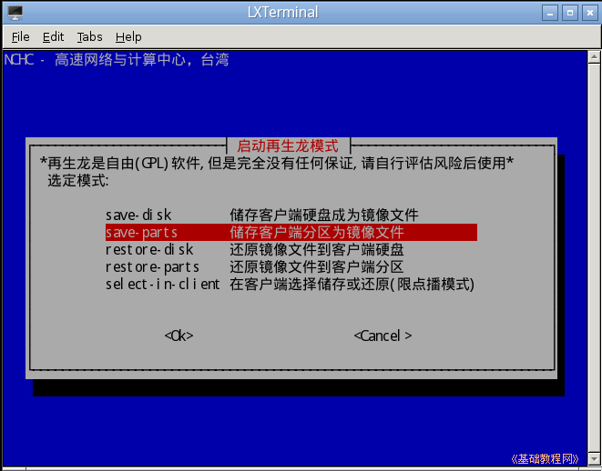
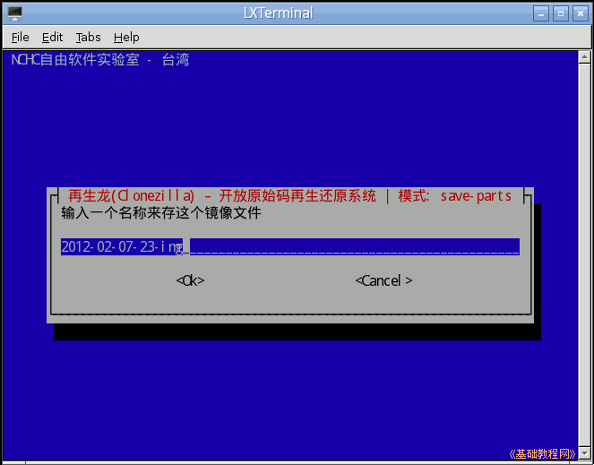

DRBL 操作指南
作者：TeliuTe 来源：基础教程网
六、Clonezilla 备份系统 返回目录 下一课利用再生龙 Clonezilla 和 Drbl 组合起来，可以进行批量安装操作系统；
1、设置网络复制
1）打开终端，输入命令 sudo /opt/drbl/sbin/dcs 然后按回车键，接下来是用键盘操作；
2）直接按回车键，选择第一项 All 选择所有的客户端，出来模式选择面板；
3）在模式选择面板中，按下方向键选择“Clonezilla-start 启动再生龙(Clonezilla)模式”；
4）接下来的再龙模式中，直接按回车键选择“Beginner 初学者模式：接受默认的选择”；
5）接下来的备份/还原模式中，按下方向键选择第二个“save-parts 储存客户端分区为镜像文件”，一般是备份第一个分区的操作系统系统；

6）接下来询问何时输入文件名，直接按回车现在就输入文件名；
7）在出来的文件名文本框里，直接按回车键，用默认的就可以了；

8）接下来的输入分区号文本框里，留下sda1第一分区，其他的删去；
9）接下来询问是否检查备份文件，可以选不检查，按下方向键然后按回车键；
10）接下来询问备份完后客户机是否重启，直接按回车键选重启；

11）接下来询问备份文件是否分卷，直接按回车键，大于1000000MB才分卷；
12）然后提示完成，这时开启客户机就会进入备份界面；
13）如果又不想备份了，可以输入 sudo /opt/drbl/sbin/dcs 命令，在进入第3）步时选择选“停止再生龙”；
14）提示清除备份操作，恢复原来的DRBL启动；
本节学习了的基础知识，如果你成功地完成了练习，请继续学习下一课内容；
本教程由86团学校TeliuTe制作|著作权所有
基础教程网：http://teliute.org/
美丽的校园……
转载和引用本站内容，请保留版权信息和本站链接。